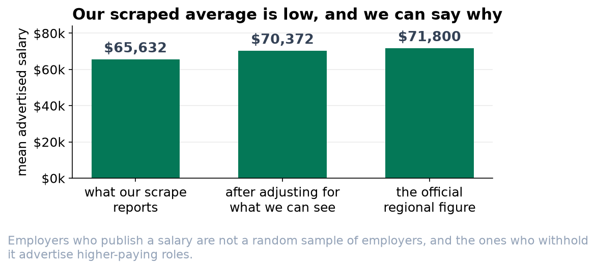
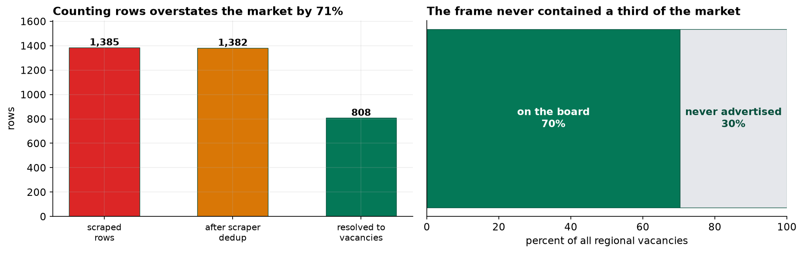

A Scraped Frame: Coverage, Entity Resolution and Non-Random Disclosure in Job Posting Data
A census of a frame nobody designed, benchmarked against an external source.
Objective. To estimate advertised salary and remote-working prevalence for data-analyst roles in one region, and to characterize the error structure of a scraped sampling frame. Methods. All listings matching the occupation on one public board were captured over one quarter under a documented permissions protocol, yielding 1,385 rows. Because collection was exhaustive within the frame, sampling error is nil and the analysis concerns coverage, duplication and item non-response. Listings were resolved to vacancies, and salary was reweighted to the board's and then to the region's seniority distribution. Results were benchmarked against an official occupational earnings survey. Results. 1,382 unique listings resolved to 808 vacancies, so listing counts overstate vacancy counts by 71.0%. Salary was disclosed on at least one listing for 72.3% of vacancies, with disclosure falling monotonically from 91.0% (Junior) to 32.8% (Lead) while mean disclosed pay rose from $50,159 to $104,181, so missingness depends strongly on an observed covariate correlated with pay. The complete-case mean was $65,632 against a benchmark of $71,800 (-8.6%). Reweighting recovered 55% and then 77% of the gap. Remote-working prevalence was within 1.9% of the benchmark. Conclusions. Exhaustive collection eliminates the only error component with a standard formula and leaves the others untouched. Estimand validity must be argued variable by variable.
1. Introduction
Datasets assembled by automated collection are now routine, and they are commonly treated as populations rather than as samples on the grounds that collection was exhaustive. The inference is valid as far as it goes, since a census of a frame has no sampling error. It is also the least useful thing that can be said about such a dataset, because the frame was constructed by processes external to the research, and the remaining components of total survey error are unaffected by the completeness of collection.
This report treats a scraped corpus of job advertisements as what it is, a census of a frame with unknown selection properties, and quantifies each error component against an external benchmark. The exercise is possible only because such a benchmark exists; the more general point is that without one, none of the errors documented below would be detectable from the data.
2. Collection protocol
| Element | Specification |
|---|---|
| Target population | All open data-analyst vacancies in the region during the quarter |
| Frame | Listings visible on one public board, not excluded by robots.txt, reachable within the rate limit |
| Method | Exhaustive capture of matching listings, so a census of the frame with nothing sampled |
| Rate limit | One request per two seconds Identifying user agent with contact address |
| Access | No authentication walls circumvented |
| Personal data | Named recruiter details discarded at parse time and never retained |
The distinction between what is technically achievable and what is permitted is not enforced by software. A collection protocol that cannot be stated should not be published, on the same principle that governs the reporting of ethical approval in human-subjects research.
3. Entity resolution
| Stage | Rows |
|---|---|
| Raw capture | 1,385 |
| After removing crawler duplicates | 1,382 |
| Resolved to distinct vacancies | 808 |
| Inflation if unresolved | 71.0% |
A single vacancy may be advertised repeatedly by the employer and concurrently by one or more agencies operating under their own trading names, with divergent job titles. The unit of analysis is therefore not observable directly in the raw data and must be reconstructed. Reporting listing counts as vacancy counts overstates market volume by more than seventy percent, an error of magnitude far exceeding any sampling consideration.
4. Item non-response on the salary field
| Seniority | Vacancies | Disclosure rate | Mean disclosed salary |
|---|---|---|---|
| Junior | 211 | 91.0% | $50,159 |
| Mid | 368 | 73.9% | $66,355 |
| Senior | 165 | 60.0% | $85,476 |
| Lead | 64 | 32.8% | $104,181 |
The disclosure mechanism depends on seniority, which is observed for every vacancy and strongly associated with pay, so the data are missing at random conditional on seniority; whether disclosure also depends on pay within a band (missingness not at random) is not testable from the frame. Unadjusted complete-case analysis is biased, and the direction of the bias is predictable from the mechanism. The unobserved values lie disproportionately in the upper tail, so the complete-case mean is attenuated downward. This is not a precision loss and is not remedied by additional collection.
5. Benchmarking and partial correction
| Estimator | Value | Deviation from benchmark | Corrects for |
|---|---|---|---|
| Complete-case mean | $65,632 | -8.6% | nothing |
| Reweighted, board seniority mix | $69,026 | -3.9% | the disclosure filter |
| Reweighted, regional seniority mix | $70,372 | -2.0% | disclosure and coverage composition |
| Official benchmark | $71,800 | — | — |
The standard error of the complete-case mean is $692, implying a nominal 95% interval of [$64,276, $66,987]. The benchmark lies outside it. The interval is computed correctly, but it quantifies a component of error that is close to zero by construction while the operative errors lie entirely outside its scope. Additional collection would narrow it around the same displaced center.
Reweighting to seniority recovers 55% of the deviation, and reweighting to the regional rather than the board composition a further 22 points, for 77% in total. The residual cannot be apportioned from the frame. Candidate sources are pay-dependent disclosure within bands, within-band coverage, and the difference between the benchmark's earnings measure and advertised band midpoints. No weighting scheme constructed from the observed data can address within-band selection, since the required distributional information is precisely what is unobserved.

6. Coverage
| Seniority | Appears on a public board | Mean disclosed pay |
|---|---|---|
| Junior | 75.5% | $50,159 |
| Mid | 73.6% | $66,355 |
| Senior | 63.5% | $85,476 |
| Lead | 58.0% | $104,181 |
Coverage error and disclosure error operate in the same direction, both removing higher-paid roles. Concordant biases are more tractable analytically than offsetting ones, but the offsetting case is the more hazardous in practice, because an estimate that appears correct while resting on two large errors of opposite sign provides no indication that investigation is warranted.

7. Variable-specific validity
| Estimand | Scraped | Benchmark | Deviation | Filters applied |
|---|---|---|---|---|
| Mean advertised salary | $65,632 | $71,800 | -8.6% | coverage and disclosure |
| Share fully remote | 36.5% | 37.2% | -1.9% | coverage only |
Remote status is recorded on substantially all listings, so no disclosure filter operates on it, and coverage is approximately neutral with respect to it. The dataset is therefore fit for one purpose and unfit for another. Validity is a property of the estimand given the selection mechanism, and it does not attach to the dataset as a whole.
8. Discussion
Some of these findings hold for scraped data in general. First, exhaustive collection removes the error component for which standard machinery exists and leaves the others intact, so the reassurance offered by a narrow interval on scraped data is spurious. Second, the unit of analysis in scraped data is frequently not the unit of storage, and entity resolution belongs to the analysis rather than to preprocessing. Third, external benchmarking is required, because every error quantified in this report was invisible from within the dataset.
Ethical and legal considerations attach at collection rather than at analysis. Whether collection is permitted is governed by the terms of service and by robots.txt, and whether it is considerate is governed by rate limiting. Whether personal data may be retained is governed by data protection law independent of both. None of the three is enforced by the collection succeeding technically.
9. Conclusion
Mean advertised salary from the scraped frame is $65,632, deviating from the benchmark of $71,800 by -8.6%. Reweighting on seniority recovers 77% of the deviation; the remainder is attributable to within-band disclosure selection and to the 30% of vacancies never advertised publicly. Listing counts overstate vacancy counts by 71.0%. Remote-working prevalence is estimated accurately, illustrating that frame validity must be established per estimand.
References
- Groves, R. M., & Lyberg, L. (2010). Total survey error: past, present, and future. Public Opinion Quarterly, 74(5), 849–879.
- Rubin, D. B. (1976). Inference and missing data. Biometrika, 63(3), 581–592.
- Little, R. J. A., & Rubin, D. B. (2019). Statistical Analysis with Missing Data (3rd ed.). Wiley.
- Meng, X.-L. (2018). Statistical paradises and paradoxes in big data. Annals of Applied Statistics, 12(2), 685–726.
- Bradley, V. C., Kuriwaki, S., Isakov, M., et al. (2021). Unrepresentative big surveys significantly overestimated US vaccine uptake. Nature, 600, 695–700.
- Christen, P. (2012). Data Matching: Concepts and Techniques for Record Linkage. Springer.
- Salganik, M. J. (2018). Bit by Bit: Social Research in the Digital Age. Princeton University Press.
Reproducibility
The dataset (capstone-web-scraping-job-postings.xlsx), containing the raw capture with duplicates and parse failures intact, the collection plan and permissions record, and the external benchmark sheet, accompanies the chapter together with an executable notebook reproducing every statistic, table and figure. Analyses use NumPy, pandas and Matplotlib.